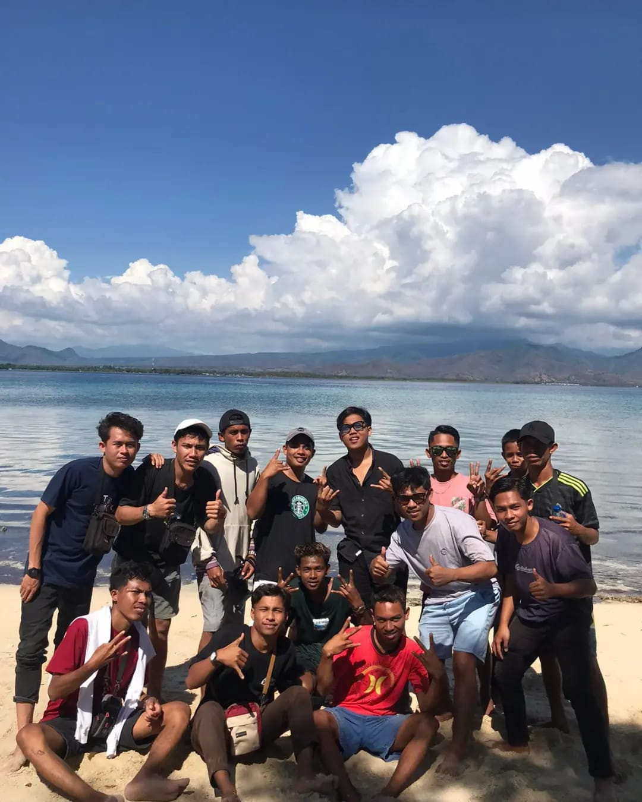
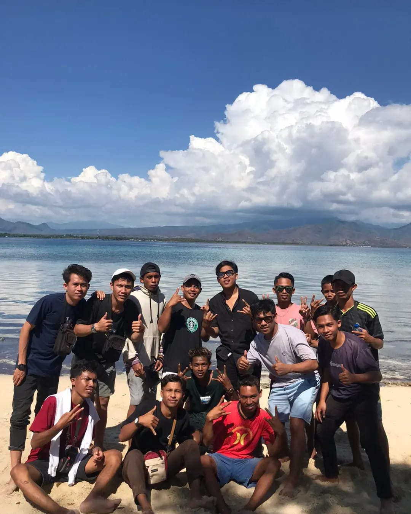

Tentang Dusun Labuhan Bua
Dusun Labuhan Bua terletak di Desa Pukat, Kec. Utan, Kab. Sumbawa, Provinsi Nusa Tenggara Barat [ NTB ] . Dusun ini memiliki keindahan alam yang memukau dan budaya yang kaya, termasuk salah satu tempat jual beli hasil laut terbesar dipulau Sumbawa, dikarenakan mayoritas masyarakat disini sebagai Nelayan dan ada juga sebagai petani yg hasilnya sangat melimpah setiap tahun, adapun hasil dari tangkapan nelayan sendiri terkadang langsung dijual ke kepulau lombok. hasil tangkapan nelayan berupa Tuna sirip Kuning, Marlin dan juga beberapa jenis ikan laut lainnya langsung dijual untuk dikirimkan ke Pulau Lombok dan juga Bali
Potensi Wisata
Beberapa destinasi wisata di Dusun Labuhan Bua antara lain Pantai Labuhan Bua, beberapa Pulau atau Gili , dan kuliner khas Sumbawa. ada beberapa pulau yg sangat terkenal disumbawa denga sebutan GILI BEDIL & GILI KERAMAT, dari 2 Pulau/Gili tersebut sudah banyak wisatawan yg datang untuk berkunjung, ngecamp, mancing hingga snorkling diarea pulau tersebut, dikarnakan terdapat banyak jenis ikan dan terumbu karang yg indah, air laut jernih dan bersih. Pulau/Gili Bedil terkenal dengan pulau indah dikarnakan terdapat banyak pohon kelapa yg bagus dan pulau kecil mungil, wisatawan banyak berkunjung ke pulau tersebut karna sangat cantik untuk dijadikan tempat berlibur, untuk Pulau/Gili keramat sendiri terkenal dengan banyaknya pohon Bakau dan sangat luas, banayk spot atau tempat untuk melakukan aktifitas seperti mandi, mancing hingga ngecamp.
pulau Keramat ini juga terkenal dengan banyaknya Kerang kecil yg bisa kita dapat dengan cara mencari di pinggir-pinggir pantainya. selain itu juga kami dari masyarakat dusun Labuhan Bua sangat menjaga Pulau/Gili tersebut agar tetap bersih, kami juga menyediakan subah kapal/Perahu untuk para wisatawan luar atau dalam daerah yg ini mengunjungi ke dua Pulau tersebut.


 
